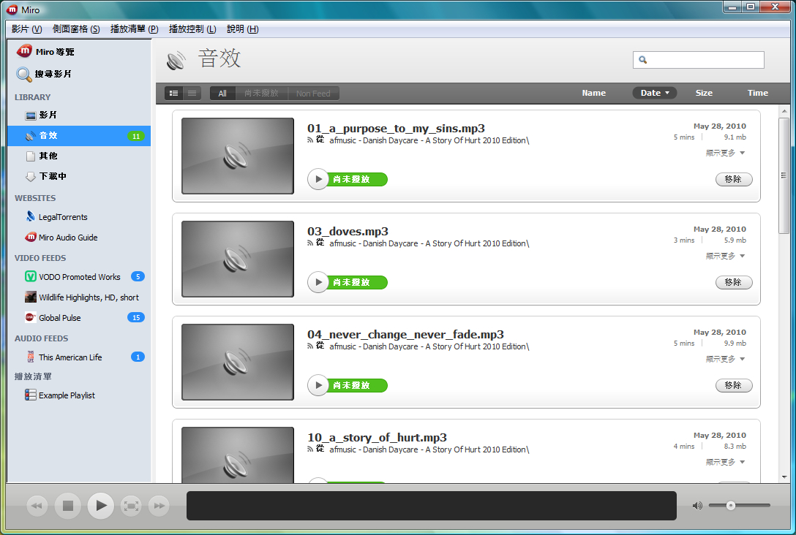

也紀念我們永遠的朋友 李士傑先生（Shih-Chieh Ilya Li）。
跨平台影片播放器：Miro 3
Miro 目前的最新版本為 3.x，本身以開放原始碼的方式進行開發，並支援 Windows、Mac OS X 及 GNU/Linux 三大作業平台。本文便以 Miro 3.0.2 的 Windows 版本進行示範。
* 軟體名稱：Miro
* 最新版本：3.0.2
* 軟體授權：GNU General Public License (GPLv2)
* 系統支援：Windows、Mac OS X、GNU/Linux
* 官方網站：https://www.getmiro.com/
瀏覽 HD 影片內容
Miro 的賣點之一是提供超過 6000 種網路影片。如果使用者欣賞網路影片只為了打發時間，對於想看哪一類影片較無頭緒的話，便可透過 Miro 內置的影片目錄「Miro 導覽」 (Miro Guide) ，瀏覽該軟體所提供的影片選擇。值得留意的是，因應目前網路影片質素邁向「高解析度」 (High Definition, HD) 的趨勢，Miro 導覽特別設有 "HD Shows" 專區，方便使用者可以直接下載這些經 Miro 挑選過的 HD 影片進行觀看。而如果使用者是使用較大頻寬的網路連線，更可選擇以即時串流的方式觀看線上 HD 影片。
使用者啟動 Miro 後，按一下左方的「Miro 導覽」項目，便可看到介面右方顯示出的 Miro 導覽網頁。透過這個網頁，使用者可以瀏覽 Miro 所挑選過的網路影片。點選網頁中的「HD Shows」或「HD Favorites」，更可瀏覽 Miro 提供的 HD 影片頻道。
點選網頁中的「HD Favorites」，可看到 Miro 所提供的 HD 影片頻道。將鼠標移至影片頻道的縮圖，便可選擇「ADD TO SIDEBAR」將影片頻道加進左方的「側面窗格」 (sidebar) ，或者選擇「WATCH」即時觀看影片。
點選「WATCH」後，使用者可即時觀看該影片頻道最新一集的內容。如果想重溫以往的內容，可在網頁下方中進行搜尋。
當使用者按下影片下方控制列最右邊的圖示，便可以「全屏幕」的方式觀看影片內容。
既然是網路影片瀏覽器，Miro 本身亦提供網路影片頻道的訂閱功能。使用者透過 Miro 介面，按下所選影片頻道的「ADD FEED TO YOUR SIDEBAR」後，這個影片頻道便會加入 Miro 介面左方「側面窗格」中的「VIDEO FEEDS」。日後當使用者再次啟動 Miro 時，該軟體便會自動下載已訂閱影片頻道的最新內容。
搜尋英語以外的影片內容
Miro 不僅提供英語的影片內容。透過 Miro 導覽中 "Video By Language" 或 "Audio By Language"的選項，使用者可以輕易搜尋其他語言的影音內容。
透過 Miro，使用者可以找到若干以國語為主的影片頻道，可惜目前數量並不算多。
如果使用者想要搜尋指定題材的影片內容，可點選「側面窗格」中的「搜尋影片」，以「關鍵字」的方式進行搜尋。
合法下載開放公眾授權的影音內容
上文提到 Miro 可以支援 BitTorrent 的下載方式，其實這樣的下載方式，並不必然涉及對他人著作權利的侵害，以下筆者便以步驟化的方式，介紹如何以 Miro 合法地下載開放公眾授權的影音內容。
首先，在 Miro 「側面窗格」中的「WEBSITES」，使用者可點選「LegalTorrents」項目，介面便會出現一個名為 "ClearBits" 的網站，這個網站前稱 "LegalTorrents"，專門提供開放公眾授權內容的 BitTorrent 種子。
使用者可以按媒體的種類（如音樂、電影等），瀏覽 ClearBits 合法提供的下載內容，或者以「關鍵字」來搜尋所需內容。
如果想下載所需的內容，請在內容的介紹主頁中，點選「Torrent file」。
Miro 便會即時取得所選內容的種子檔案，並且以 BitTorrent 的方式開始下載所選的影音內容。 在 Miro 「側面窗格」中的「LIBRARY」、「下載中」，使用者可隨時查閱影音內容的下載進度。
透過上述方法所下載的影音內容，會自動於 Miro「側面窗格」中的「LIBRARY」出現。使用者可透過 Miro 隨時播放已下載的影音內容。

* ClearBits 網址
◎ 作者簡介
線人，任職於香港，求學時期曾經接觸過 Apple II 、 PC 等電腦系統，現今從事與智慧型手機有關的工作，每天的生活都是在不同作業系統（Windows、Mac OS、Linux，還有不同智慧型手機系統）之間遊走。
Address：No.128, Sec.2, Academia Rd., Institute of Information Science, Academia Sinica, Nangang District, Taipei City 11529, Taiwan (R.O.C).
Privacy Policy. Terms-of-use